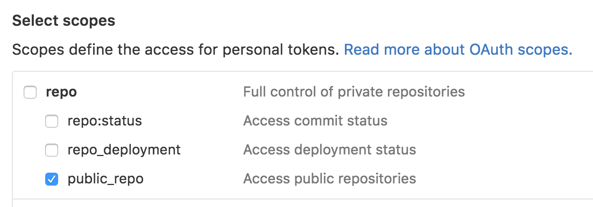
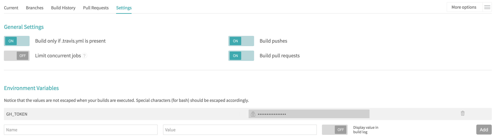

Publicación estática (II)
Han pasado casi tres meses desde que se publicó el primer artículo sobre publicación estática en EntreDevYOps, en el que se prometía un ejemplo... Lo prometido es deuda. Espero que el interés sobre el tema aún siga vigente...
En este artículo, se muestra, paso a paso, y con un ejemplo real, cómo realizar una publicación estática, con Hugo, usando Travis, en GitHub Pages.
El resultado será un sitio web con una sola página, una especie de about.me, cuyas actualizaciones se harán mediante push a un repositorio, que provocarán, de forma automática, su publicación en GitHub Pages.
Requisitos
Los requisitos son los siguientes:
- Dominio: En el caso expuesto, se utiliza
midominio.es. - Cuenta de GitHub: El artículo trabaja con la cuenta
cuenta. - Acceso a Travis.
- Go instalado.
- Cuenta en Google Analytics, aunque sería opcional.
Instalar hugo
Como con cualquier herramienta en Go, instalar Hugo es tan sencillo como usar go get:
go get -u -v git@github.com/spf13/hugo
Creación del nuevo sitio
Para usar GitHub Pages, con una cuenta de usuario o de organización, hay que usar el nombre cuenta.github.io.
Crear un nuevo sitio con Hugo, es muy sencillo:
hugo new site cuenta.github.io
A continuación, se convierte la estructura creada por Hugo, en un repositorio git.
Como GitHub Pages, para usuarios y organizaciones, utiliza la rama master, convendrá crear una rama distinta donde utilizar Hugo:
cd cuenta.github.io
git init .
git checkout -b edition
Instalar el tema
Para el ejemplo utilizado, se ha elegido un tema de Hugo, llamado Identity, que ya incluye un config.toml base, pero hay muchos otros temas disponibles.
Además, la instalación se hace usando submódulos de git:
mkdir themes git submodule add https://github.com/aerohub/hugo-identity-theme themes/hugo-identity-theme cp themes/hugo-identity-theme/exampleSite/config.toml .
Ver la versión local
Mientras se edite el sitio localmente, se puede visualizar con el subcomando server de Hugo:
hugo server -t hugo-identity-theme
Una vez ejecutándose, se puede visitar la versión local apuntando un navegador a http://localhost:1313.
Como con otras herramientas similares, este comando refresca automáticamente los cambios en el código.
Configurar la pubicación automática
A continuación, se configura el repositorio para ser usado con Travis, añadiendo el fichero .travis.yml con el contenido siguiente:
language: go sudo: false branches: only: - edition go: - 1.6 install: - go get -u github.com/spf13/hugo script: - rm -rf public - hugo -t hugo-identity-theme - git config --global user.email "cuenta+travis@gmail.com" - git config --global user.name "Travis for midominio.es" - git checkout --orphan master - cp -R public/* . - rm -rf public bin content static .gitignore .travis.yml config.toml README.md themes - echo "www.midominio.es" > CNAME - git add . - git rm -rf content themes config.toml .gitmodules .travis.yml - git commit -m "Publishing" - git push "https://${GH_TOKEN}@github.com/cuenta/cuenta.github.io.git" master -f >/dev/null 2>&1
El contenido del fichero .travis.yml detalla que para el despliegue, se utilizará Go 1.6, la rama edition, Hugo, que habrá que instalar, y los pasos necesarios para construir el contenido estático con el tema elegido, publicando el resultado en la rama master y añadiendo el fichero CNAME con el dominio elegido.
Ahora, ya se puede hacer el primer commit, incluyendo la carpeta content, necesaria para que Hugo se ejecute sin problemas:
touch content/.placeholder
git add .
git commit -am "Initial cuenta.github.io commit"
El siguiente paso, consiste en crear el repositorio cuenta.github.io en la cuenta de GitHub que se vaya a utilizar.
Conviene que se cree con un fichero README.md para forzar la existencia sin necesitar nada más.
Una vez creado el repositorio en GitHub, ya es posible enlazarlo con la copia local:
git remote add origin git@github:cuenta/cuenta.github.io.git git fetch git push --set-upstream origin edition
Para configurar la ejecución mediante Travis, primero hay que conseguir un token de la cuenta de GitHub. El token sólo necesita tener permiso para operar sobre los repositorios públicos.

El siguiente paso es crear la configuración para el repositorio en Travis.
En la configuración hay que marcar que ejecute el código siempre que haya el fichero .travis.yml, y en todos los push.
Es importante crear la variable de entorno GH_TOKEN, con el token que se ha obtenido de GitHub, indicando que no muestre el valor.

Configurar dominio
En el DNS del dominio que se quiera utilizar, hay que crear dos registros:
Un registro CNAME de www.midominio.es que apunte a cuenta.github.io.
Un registro A de midominio.es que apunte a 174.129.25.170.
Éste último registro a punta a un servicio gratuito de WWWizer que automáticamente redirige el dominio APEX al host www.
Primera publicación
A continuación, se modifican las primeras líneas del fichero config.toml, con los valores apropiados:
baseurl = "http://www.midominio.es" #without ending slash languageCode = "es-es" theme = "hugo-identity-theme" title = "Nombre del sitio"
Para hacer la publicación de este cambio, basta con hacer el commit y el push:
git commit -am "First publication"
git push
Conviene observar que el build se realiza correctamente en Travis.
Ajustes
Finalmente, se pueden ajustar ciertos aspectos de forma muy sencilla. Hay que recordar publicar bien tras cada cambio, o una sola vez tras todos los cambios, según se prefiera:
git add .
git commit -m "Add my own information"
git push
Sobreescribir el icono del sitio
El tema Identity incluye un icono para el sitio, que probablemente se desee cambiar.
Lo más directo, en lugar de editar el tema, o hacer una bifurcación, o fork, es utilizar la funcionalidad de sobreescritura de Hugo:
mkdir -p static/images/icons cp /tmp/favicon.ico static/images/icons/.
Así, creamos el directorio que corresponde a los iconos, tal y como está definido en el tema, y ponemos el icono con el mismo nombre.
Añadir avatar propio
De forma similar, se puede configurar el avatar que se quiere usar, con la diferencia de que en este caso se indica el nombre del fichero en la configuración
mkdir -p static/images/avatars cp /tmp/mi_avatar.png static/images/avatars/.
avatar = "mi_avatar.png"
Añadir código Google Analytics
El tema Identity, incluye la inserción del código para Google Analytics, por lo que, disponiendo del código para el sitio, basta con editar el fichero config.toml, dejando el código deseado:
googleAnalytics = "UA-########-#"
Configurar enlaces a redes sociales
Otra funcionalidad del tema, es la inserción de iconos de redes sociales. Por ejemplo, Para insertar la cuenta de Twitter, hay que modificar el fichero config.toml, para que tenga las siguientes líneas:
[[params.social]] title = "Twitter" icon = "fa-twitter" link = "https://twitter.com/cuenta"
Otras configuraciones en config.toml
Otros valores que se pueden modificar en el config.toml, son name, position, o copyright